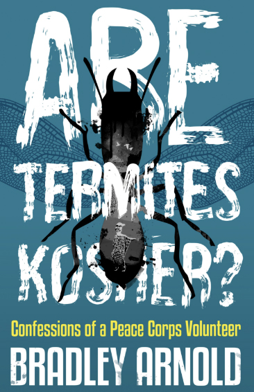

Are Termites Kosher?
Life, learning, and discovery in Cameroon.
What happens when the familiar world is left behind?
Are Termites Kosher? is a memoir of my experiences as a Peace Corps volunteer in Cameroon, exploring the people, places, encounters, and discoveries that became part of my life there.
Through humor, uncertainty, friendship, cultural encounters, and personal reflection, the book explores the experience of living and learning in an unfamiliar world.
About the Book
Living in Cameroon brought me into contact with people whose experiences, traditions, and perspectives were often very different from my own.
As a teacher, traveler, and curious observer, I found myself learning as much as I was teaching.
This memoir brings together memories of those experiences, including the ordinary moments, unexpected encounters, and questions that made life in Cameroon so memorable.
Ideas and Themes
- Life in Cameroon
- Peace Corps experiences
- Teaching and learning
- Cultural encounters
- Friendship and human connection
- Travel and self-discovery
A Note from the Author
Cameroon became much more than a place where I lived and worked.
Decades later, I continue to revisit those experiences through writing, painting, photographs, and reflection. The memories have become part of an ongoing conversation with my younger self.
Inside the Book
The complete table of contents will be added here.
Selected Readings
Selected passages and excerpts from Are Termites Kosher? will be available here.
Publication Information
Publication details, available editions, and purchasing links will be added here.
Continue the Conversation
Explore paintings, photographs, and other creative work inspired by my experiences in Cameroon.